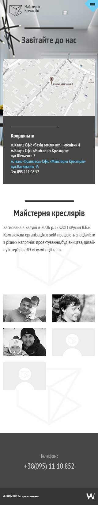
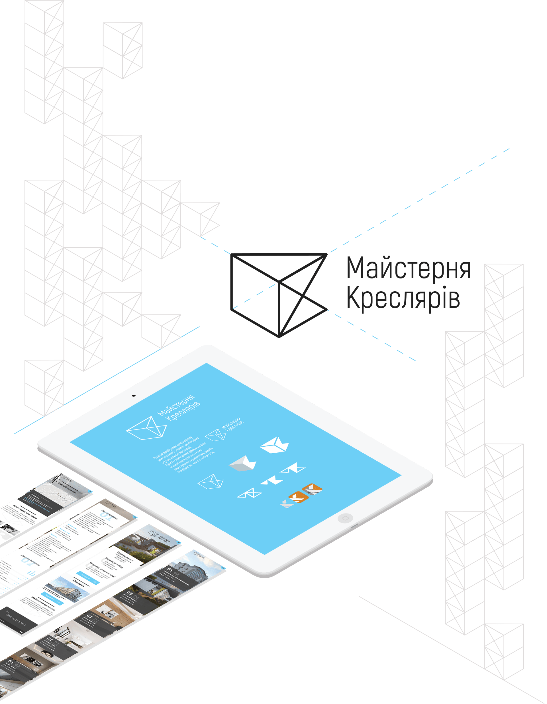

Local architectural bureau
founded in Ivano-Frankivsk.
Maisternya Kreslyariv
While creating this website we focused on clients' perception of appealing architecture. Simple design highlights the most important details.


This logo is a simply formed abbreviation of the company's name. The idea lies in putting "MK" in the geometric shape, in order to add to it a sense of perfection and architectural look.